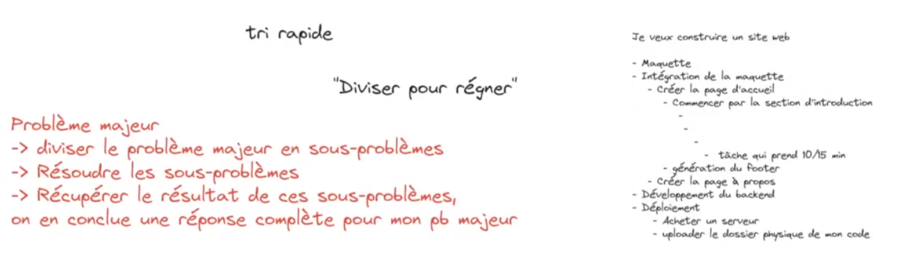
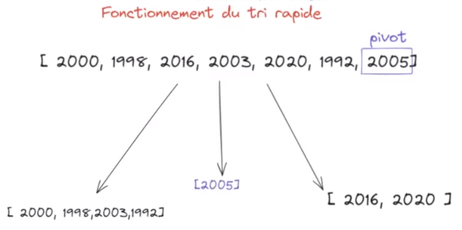
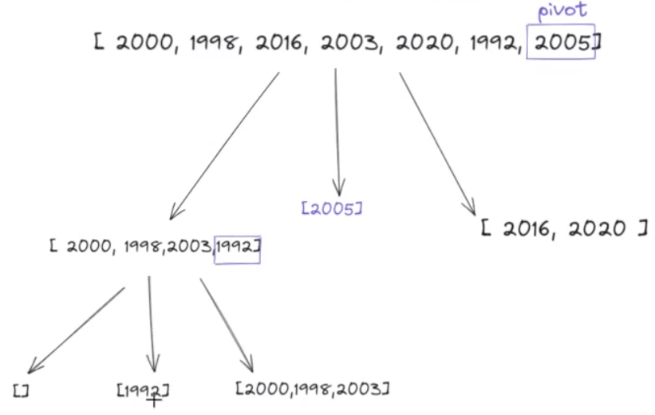
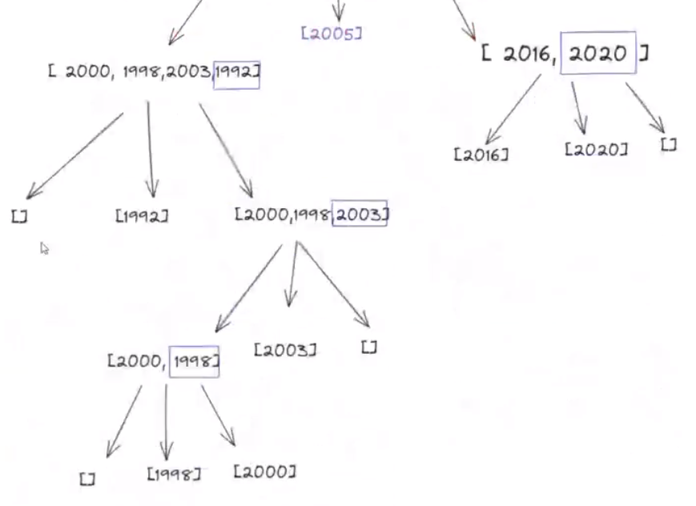
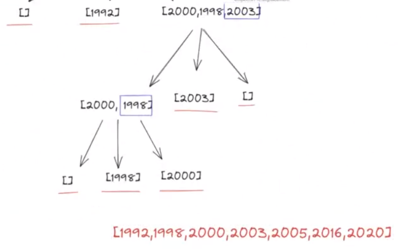
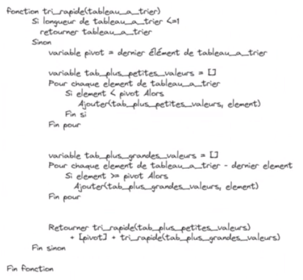
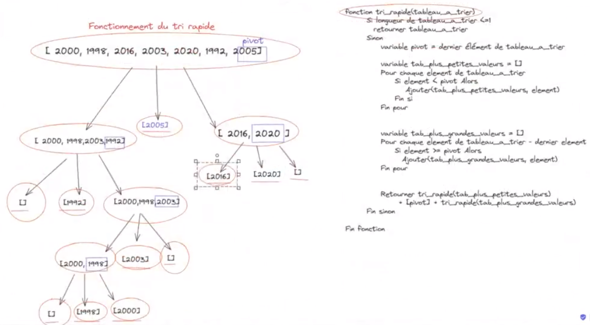

Le tri rapide est le tri le plus utilisé sur les gros
ensembles de données (à partir de 500 éléments environ).
Grâce à la récursivité, le procédé est toujours le même dans
les différentes sous-sections.
Principes
Diviser pour mieux régner : diviser le problème initial
en plusieurs sous problème.

Exemple de division d'un problème
Fonctionnement du tri rapide

Méthode :
Définir un pivot. Très souvent sur les sites
web, on parle de sélectionner la dernière
valeur du tableau.
Mettre à gauche : toutes les valeurs
inférieures au pivot
Mettre à droite : tous les éléments
supérieurs ou égaux au pivot
Mettre au milieu : le pivot

Recommencer...

... Jusqu'à ce que tous les éléments soient triés

Déterminer le résultat final
Exemple d'algorithme de tri rapide
Exemple en pseudo-code

Pseudo-code

Lien entre pseudo-code et schéma